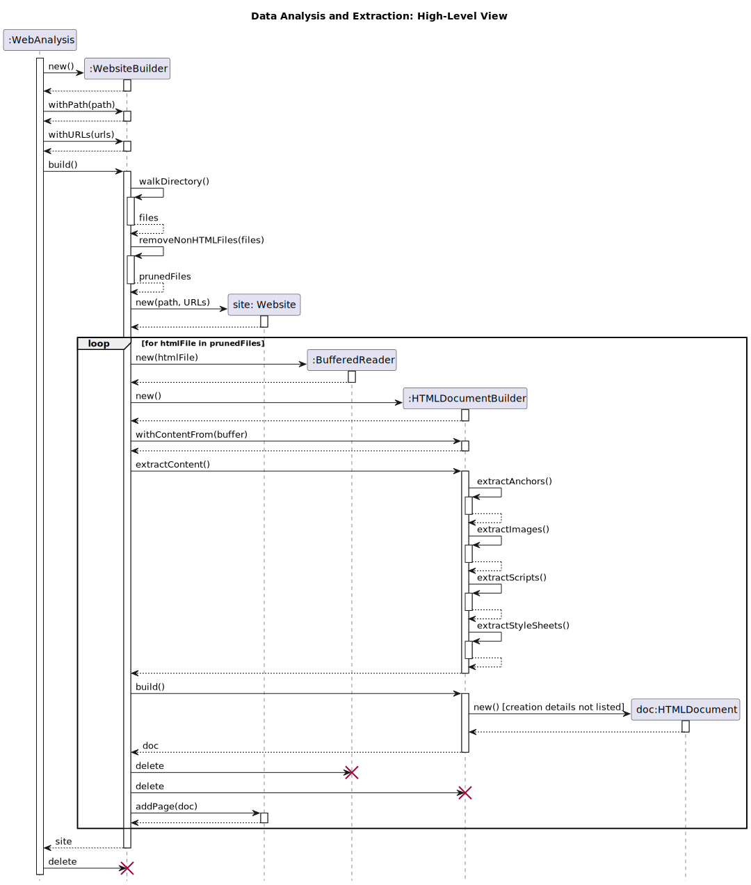
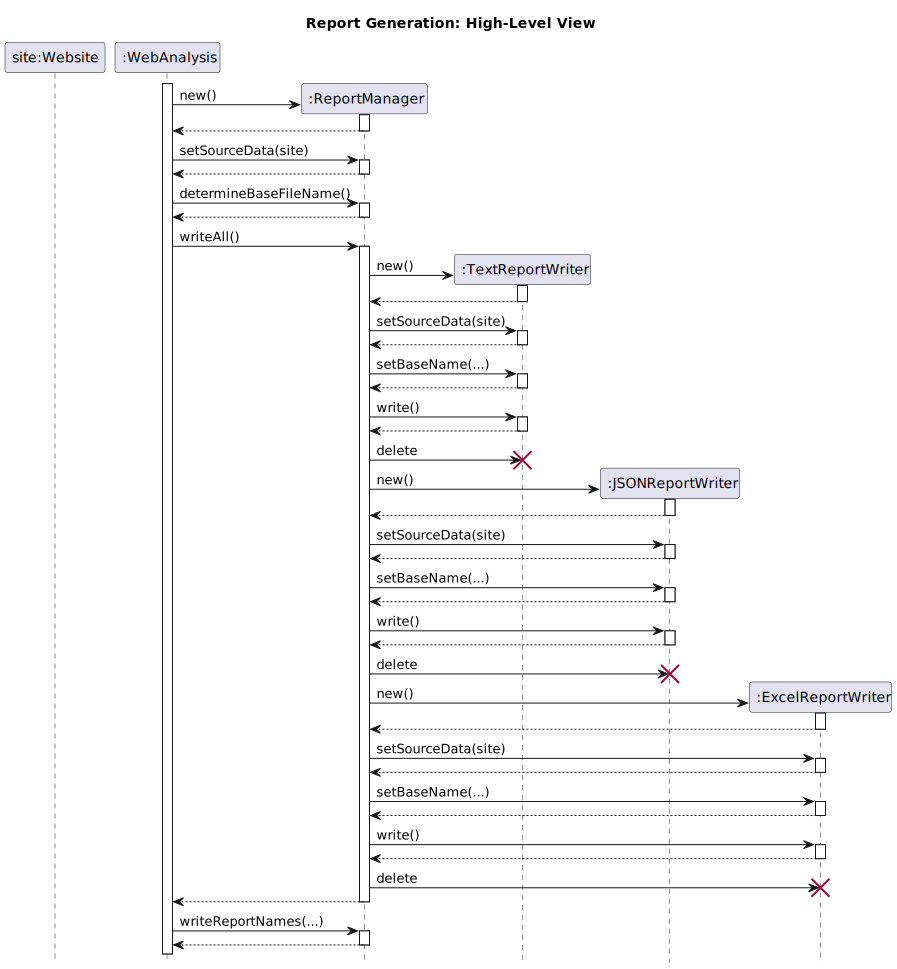

Web Analysis - Program Flow
Thomas J. Kennedy
1 Program Flow
In total… there are three distinct phases into which WebAnalysis program logic can be divided:
- Data Analysis and Extraction
- Data Normalization (e.g., path and URL normalization)
- Report Generation
1.1 Data Analysis and Extraction
Let us examine the actual analysis. Note that we will focus on the broad strokes. Details such as Exceptions, page count checks, path validation/checks, and URL validation will not be included.

Note that we did not cover the creation details of HTMLDocument objects within the HTMLDocumentBuilder.build method. I will leave this part up to you. Take note of how
- all
HTMLDocumentBuilderobjects are destroyed WebsiteBuilderis destroyed- all
BufferedReaderobjects are destroyed
We have populated the site (Website object) with all the HTMLDocument objects. The analysis objects are no longer needed.
1.1.1 Creation & Deletion
Take note of the new and delete function “calls.”
-
newrepresents a call to a constructor (i.e., creating a new object) -
deleterepresents an object being “deallocated” (i.e., leaving scope and being discarded)Even though Java is a Garbage Collected language wherein memory management is not handled explicitly by a programmer… designing around (and making use of) object lifetimes is still important. (Even if some teachers are cavalier in their approach.)
1.2 Further Analysis
I will leave the intermediary steps (i.e., all steps until report generation) up to you and your team.
1.3 Report Generation
Since the Builder objects have been destroyed… we no longer need to consider them.

1.4 Generating the Reports - Implementation
Working with text files can be accomplished with the Java BufferedWriter and FileWriter classes. The other reports require external libraries. In total (including HTML parsing) the following libraries should be utilized…
| Organization | Artifact ID | Version | Gradle Dependency | Description |
|---|---|---|---|---|
| org.jsoup | jsoup | 1.16.1 | org.jsoup:jsoup:1.16.1 | HTML Parsing |
| org.apache.poi | poi | 5.2.3+ | org.apache.poi:poi:5.2.3+ | Read/write Microsoft document formats |
| org.apache.poi | poi-ooxml | 5.2.3+ | org.apache.poi:poi-ooxml:5.2.3+ | Read & write Excel spreadsheets |
| com.cedarsoftware | json-io | 4.14.0 | com.cedarsoftware:json-io:4.14.0 | JSON Export/Import |
The table outlines the libraries that students used in CS 350 during the Summer 2023 semester.
Note that Gradle is similar to make in that it handles compiling code. It also handles configuration management, generating documentation, running analysis tools…